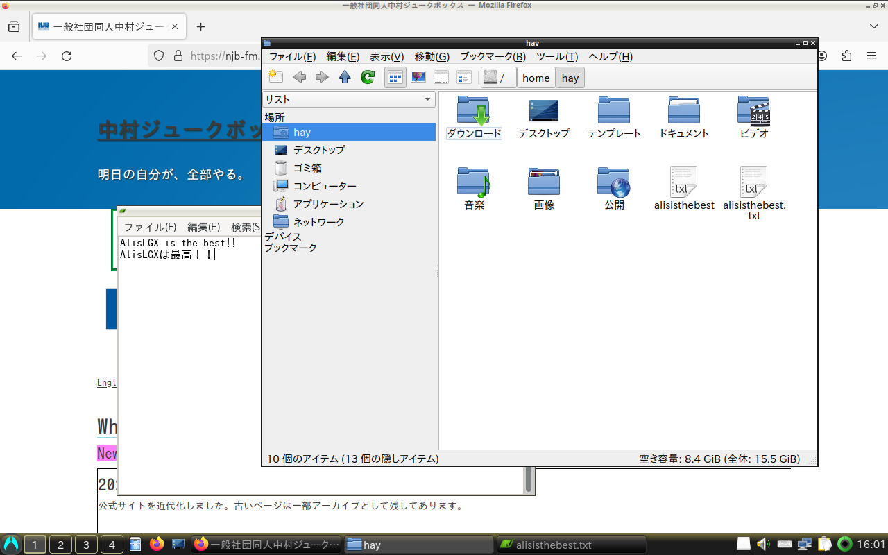
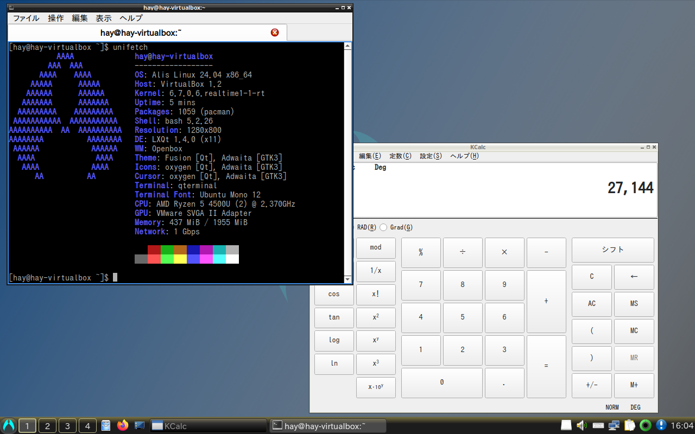
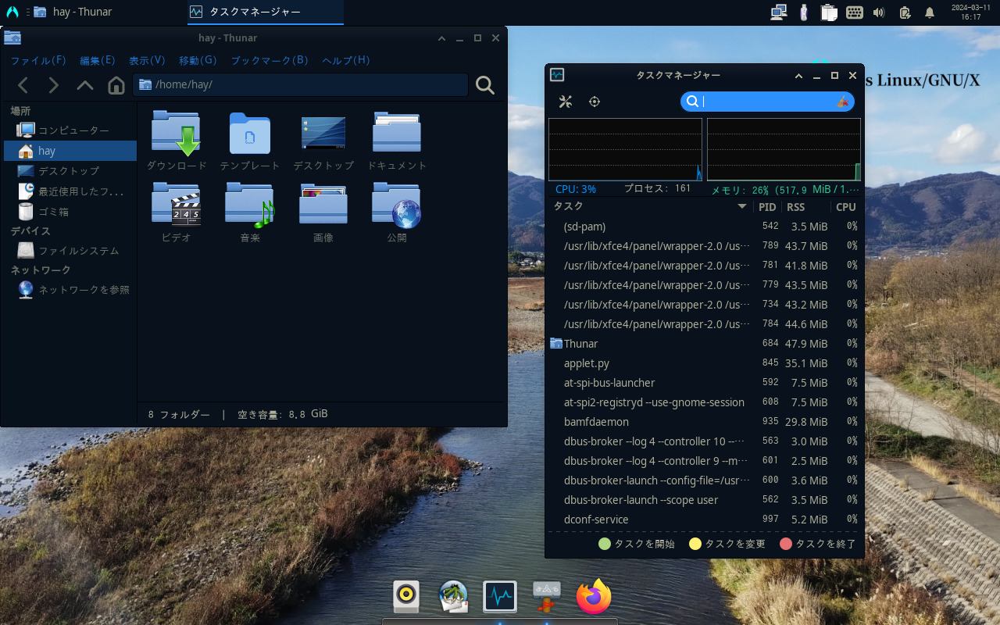
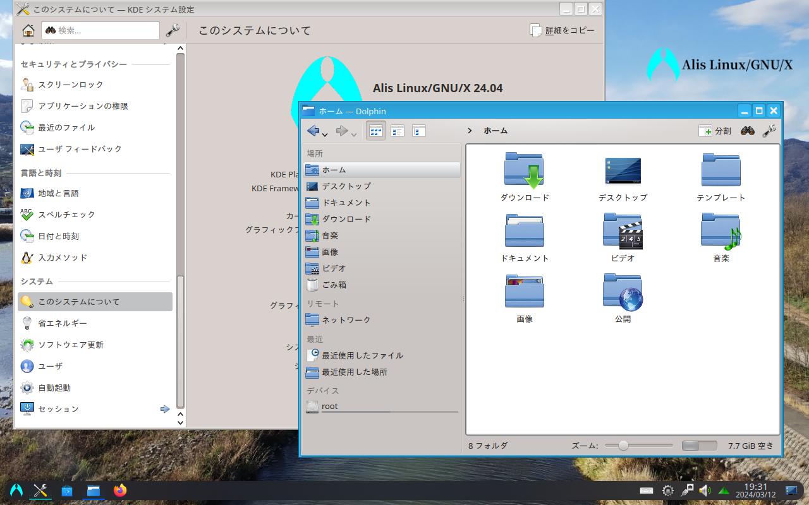
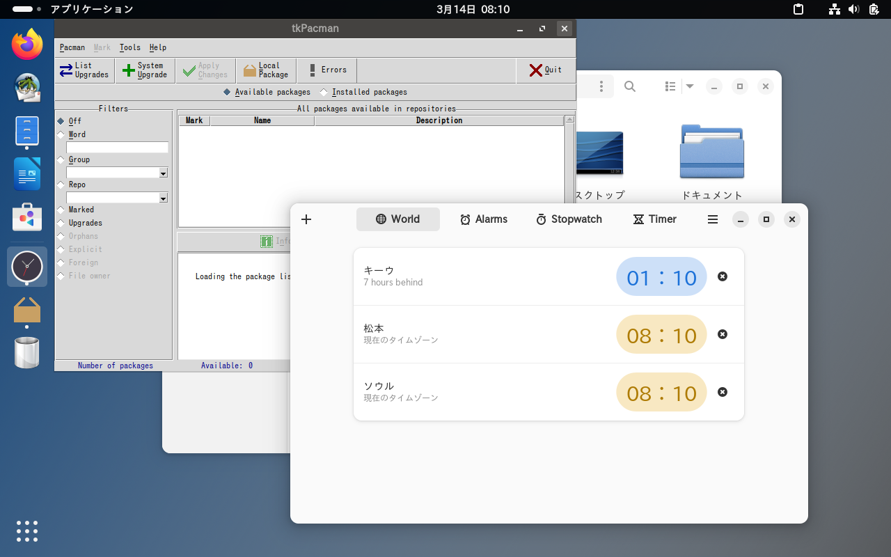

There are two ways to install Alis: you can download the ISO and burn it to media, or you can migrate from your existing Arch-based OS.
Which do you prefer?
| Download ISO | Migrate from existing environment |
We are currently preparing to release version 24.04. Just a moment.
When you use Alis, you require the agreement of the End-user License Agreement (EULA) and various licenses.
Alis Linux/GNU/X End-user License Agreement
Alis comes with no guarantees or warranties of any sorts, either written or implied.
This distribution is licensed under 3-Clause BSD License.
In addition to, this includes a number of pre-existing software components, each of which is governed by its own open source license and is made available to you under the terms of such applicable license.
You are responsible for reviewing and complying with the terms of the licenses for those applicable software components.
3-clause BSD License
Copyright (c) 2022-2024, NAKA-MURA JUKEBOX.
Redistribution and use in source and binary forms, with or without modification, are permitted provided that the following conditions are met:
1. Redistributions of source code must retain the above copyright notice, this list of conditions and the following disclaimer.
2. Redistributions in binary form must reproduce the above copyright notice, this list of conditions and the following disclaimer in the documentation and/or other materials provided with the distribution.
3. Neither the name of the copyright holder nor the names of its contributors may be used to endorse or promote products derived from this software without specific prior written permission.
THIS SOFTWARE IS PROVIDED BY THE COPYRIGHT HOLDERS AND CONTRIBUTORS “AS IS” AND ANY EXPRESS OR IMPLIED WARRANTIES, INCLUDING, BUT NOT LIMITED TO, THE IMPLIED WARRANTIES OF MERCHANTABILITY AND FITNESS FOR A PARTICULAR PURPOSE ARE DISCLAIMED.
IN NO EVENT SHALL THE COPYRIGHT HOLDER OR CONTRIBUTORS BE LIABLE FOR ANY DIRECT, INDIRECT, INCIDENTAL, SPECIAL, EXEMPLARY, OR CONSEQUENTIAL DAMAGES (INCLUDING, BUT NOT LIMITED TO, PROCUREMENT OF SUBSTITUTE GOODS OR SERVICES; LOSS OF USE, DATA, OR PROFITS; OR BUSINESS INTERRUPTION) HOWEVER CAUSED AND ON ANY THEORY OF LIABILITY, WHETHER IN CONTRACT, STRICT LIABILITY, OR TORT (INCLUDING NEGLIGENCE OR OTHERWISE) ARISING IN ANY WAY OUT OF THE USE OF THIS SOFTWARE, EVEN IF ADVISED OF THE POSSIBILITY OF SUCH DAMAGE.
IPA Font License
Alis is equipped with "IPA Font". You must read and agree to the "IPA Font License v1.0" of the Character Information Technology Promotion Council.(https://moji.or.jp/ipafont/license/)
.........Did you thorough read it?
How about something like this?
LXQtA desktop environment that seems to embody "Simple and Robust". It is light, but it has all the functions of a desktop. Standard Machine SpecsCPU x86_64, 1 GHz or higher |
 |
|  |
LXQt AmberFor devices with older (around gen 2-8) Intel graphics. No matter how new it is, there's no turning a blind eye to history. Standard Machine SpecsCPU x86_64, 1 GHz or higher |
XfceDespite its gorgeous appearance, it is lightweight. Appearance looks like you can be smug at a cafe, but maybe it doesn't mean much. Standard Machine SpecsCPU x86_64, 1 GHz or higher |
 |
|  |
PlasmaMaybe the most modern desktop flavour. There are also screen effects such as the taskbar floating and windows jiggling like jelly. Standard Machine SpecsCPU x86_64, 1 GHz or higher |
GNOMEDoes not resemble either Win or Mac operatibility. May be lighter than it looks. Standard Machine SpecsCPU x86_64, 1 GHz or higher |
 |
Please follow the steps below to perform the migration.
sudo pacman -Syu
wget https://alislinux.github.io/migrate2alis.sh
sudo bash migrate2alis.sh
When you use Alis, you require the agreement of the End-user License Agreement (EULA) and various licenses.
Please take a look at the license displayed when you run the script.
The script itself is licensed under the 3-clause BSD license.